Four moves: stack the droplets, dedup on UMIs, cluster what's left, name the cell types.
Learning objectives
- Explain what bulk RNA-seq (Lecture 5) averages away, and name two biological questions that can only be answered at single-cell resolution.
- Sketch a 10x Genomics droplet-based single-cell RNA-seq workflow end-to-end, and explain what cell barcodes and UMIs are doing.
- Describe why UMIs solve the PCR-duplicate problem that bulk RNA-seq tolerates, and relate UMIs to error-correcting tags.
- Read a knee plot and set an EmptyDrops-style threshold separating real cells from ambient barcodes.
- Name three QC filters that every single-cell analysis applies (doublets, mitochondrial fraction, ambient RNA) and explain what each removes.
- Explain why bulk normalisation methods fail on sparse single-cell data, and describe the alternative.
- Describe the dimensionality-reduction pipeline: PCA → UMAP/t-SNE → graph-based clustering → marker gene identification.
- Annotate a cluster of cells as a cell type using either marker-based or reference-based methods, and state the tradeoff between them.
Part 1 · 45 min Why Single-Cell and the Droplet Chemistry
1.1 What bulk RNA-seq hides
Lecture 5 covered bulk RNA-seq: take millions of cells, extract RNA, sequence. The output is an expression profile averaged across the whole tube. For a tissue like liver or blood, that average is a weighted mean over many distinct cell types — hepatocytes and macrophages and endothelial cells all contributing to the same number.
Three biological questions the bulk average can't answer:
- Which cell type expresses the gene I care about? A single bulk value for "TNF in whole blood" doesn't say whether TNF is being made by monocytes, T cells, or neutrophils — and that matters for therapy.
- Do rare cells exist that express something nobody else does? A tumor-infiltrating regulatory T cell at 0.5% of the cells contributes 0.5% to any bulk average. Its distinct expression program is invisible.
- Are cells continuously transitioning, or discrete? Development, immune activation, differentiation — these look like smooth gradients when you sample one cell at a time, but averaging turns the gradient into a single static value.
Single-cell RNA-seq (scRNA-seq) answers these by measuring transcript abundance in each cell separately. The output is a cell × gene count matrix: thousands of cells as rows, ~20,000 genes as columns, entries are molecule counts.
1.2 Cell-type heterogeneity and the "average cell" fallacy
The empirical claim that drove the field: almost no tissue is homogeneous. Even a supposedly pure cell population — say, CD4+ T cells sorted to 99% purity from peripheral blood — turns out to contain five or ten functionally distinct states when you look cell-by-cell. Naïve T cells, effectors, central memory, regulatory, exhausted, and a few transitional states whose existence wasn't even hypothesised before scRNA-seq.
This heterogeneity means the bulk average is not a good representative of any single cell. It is, in fact, a value that no single cell has. Treating the average as "what the cell is doing" is the ergodic fallacy — assuming the ensemble mean tells you the per-sample behaviour.
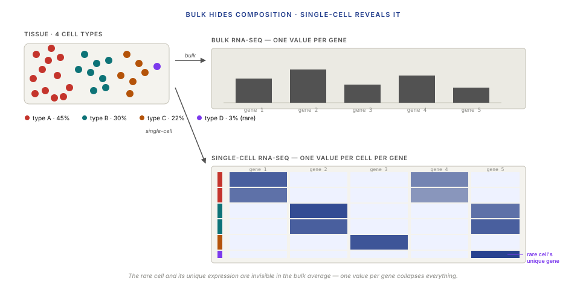
1.3 The 10x Genomics droplet chemistry
10x Genomics' Chromium platform dominates single-cell RNA-seq in 2024. It's a droplet-based method: cells are encapsulated in oil-water emulsion droplets alongside a barcoded gel bead, each cell's mRNA is reverse-transcribed into labelled cDNA inside its own droplet, then everything is pooled back together and sequenced in bulk.
The chemistry in four steps:
- Load. A suspension of ~1000–50,000 cells is loaded alongside a large excess of gel beads, each bead carrying millions of copies of a 16–18 bp cell barcode (the same barcode across all copies on one bead; different barcodes across beads). A microfluidic chip co-encapsulates one cell + one bead + oil into each droplet (called a GEM, for gel-bead-in-emulsion).
- Lyse + prime. Inside each droplet, the cell is lysed. mRNAs bind to oligo-dT primers on the bead. Each primer carries: the bead's cell barcode + a 10–12 bp unique molecular identifier (UMI) + a poly-T tail.
- Reverse transcribe. Reverse transcriptase extends each primer into a cDNA copy of the mRNA, with the cell barcode and UMI locked to the front.
- Pool + sequence. Droplets are broken, all cDNA pooled, PCR-amplified, and sequenced on Illumina. Every read carries its cell barcode (which cell it came from), its UMI (which mRNA molecule it came from), and its transcript sequence.
Typical Chromium v3 run: 10,000 cells, 50,000 reads per cell, ~3000 genes detected per cell. Total cost in 2024: ~$3,500 per sample plus sequencing.
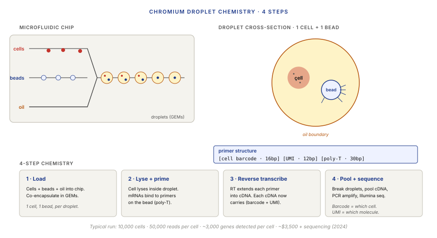
1.4 Cell barcodes and UMIs
The cell barcode says which cell the read came from. The UMI says which mRNA molecule within that cell.
A cell barcode is 16 bp (10x Chromium v3), drawn from a fixed list of ~6 million valid barcodes. After sequencing, reads are grouped by barcode — all reads sharing the same barcode came from the same cell. Some of those barcodes will be error-corrected to the nearest valid barcode in the list (Hamming-1 distance).
A UMI is 10–12 bp. It's a random sequence attached to each primer on the bead before the cell is even captured. When reverse transcription runs, each individual mRNA in the cell gets tagged with a different UMI. After PCR amplification, you end up with many copies of the same cDNA — each copy carrying the original UMI from the one mRNA molecule it came from.
The critical move: during quantification, collapse reads that share both cell barcode and UMI. They came from the same original mRNA molecule; counting them separately would inflate the count. The final count per gene per cell is the number of distinct UMIs, not the number of reads.
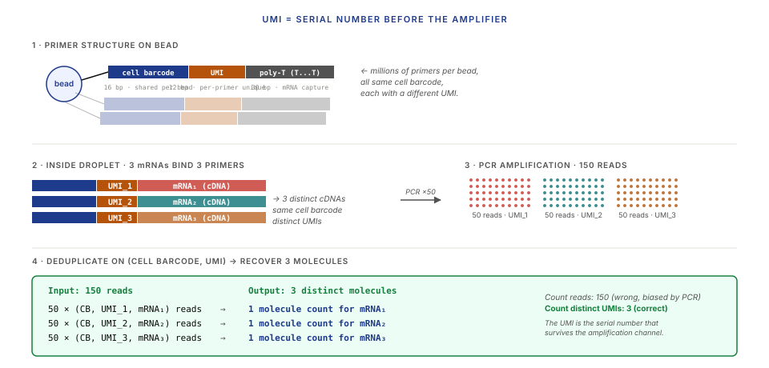
Part 2 · 60 min Data Pipeline and QC
2.1 From BCL to a count matrix
The sequencing instrument (Illumina NovaSeq, typically) emits BCL (Binary Base-Call) files directly from the flow cell. A complete pipeline from BCL to a scRNA-seq count matrix:
BCL files (Illumina flow cell)
↓ bcl2fastq
FASTQ files (R1: barcode+UMI · R2: transcript)
↓ cellranger count · STARsolo · alevin-fry
BAM + filtered_feature_bc_matrix.h5 (BAM optional with alevin-fry)
↓ QC + normalisation (§2.3-§3)
AnnData / Seurat object (cells × genes + metadata)
↓ clustering + annotation (§4-§5)
Cell-type-labeled expression atlas
Each stage has well-defined outputs. A clean pipeline records intermediate artefacts (BCL → FASTQ, FASTQ → BAM, BAM → matrix) so you can re-run any downstream step without re-sequencing or re-aligning.
2.2 Quantification tools: Cell Ranger, STARsolo, alevin-fry
The core job of the quantifier: align reads to the transcriptome (or pseudoalign, callback Lecture 5 §3), group them by (cell barcode, UMI), count distinct UMIs per gene per cell, and emit a sparse count matrix.
Three dominant tools in 2024:
- Cell Ranger (10x Genomics' own). Historically the "reference" pipeline. Under the hood, uses STAR (Lecture 5 §2.2) with 10x-specific barcode handling. Slower than modern alternatives, outputs are the de facto standard others are compared against.
- STARsolo (part of STAR). Adds 10x / Drop-seq / Smart-seq barcode handling to vanilla STAR. Much faster than Cell Ranger at similar accuracy. The go-to for anyone who isn't locked into Cell Ranger output format.
- alevin-fry (from the Salmon team). Pseudoalignment-based (Lecture 5 §3); fastest of the three. Recent enough that not everyone trusts it yet, but benchmarks match STARsolo within ~2% on standard datasets.
Output formats:
- The count matrix is saved as an HDF5 file (
.h5) or in 10x's Matrix Market triplet format (.mtx+barcodes.tsv+features.tsv). Both are sparse formats — a 10,000-cell × 20,000-gene dataset has ~5% non-zero entries; storing the full dense matrix wastes an order of magnitude of disk. - The object that downstream analysis tools (Seurat, Scanpy) consume is the AnnData (Python) or SeuratObject (R) container — essentially "the sparse count matrix plus per-cell and per-gene metadata."
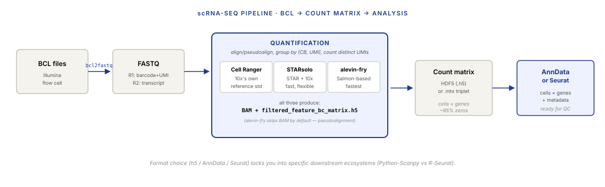
2.3 Empty droplets and the knee plot
Every 10x run generates more barcodes than it has cells. Two reasons: (1) some droplets contain only ambient RNA (lysed debris floating in the buffer) with no real cell — they still produce reads, tagged with their bead's barcode; (2) some droplets contain just a bead with no cell at all.
The empty-droplet barcode counts are not zero — they contain small amounts of ambient RNA, typically 10–1000 UMIs per barcode. Real cells usually have 1000–100,000 UMIs. A knee plot — barcodes sorted by total UMI count, plotted on log-log — shows a characteristic sharp transition (the "knee") separating the two regimes.
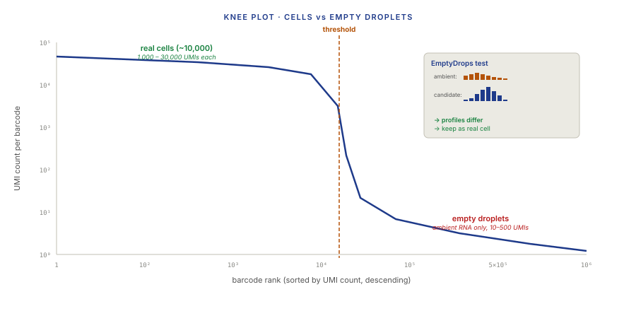
2.4 Doublet detection
When two cells accidentally end up in the same droplet (two cells captured together), their mRNA gets the same cell barcode. The resulting "cell" appears to express the gene programs of both underlying cells — a doublet.
Doublet rate scales with cell-loading concentration. 10x's recommended loading produces about 4–8% doublets at 10,000 targeted cells. Load more cells, you get a higher doublet rate (this is a per-chip hardware limitation, not a choice you can skip).
Doublet-detection algorithms work by recognising the "mixture" signature:
- Scrublet (Wolock et al. 2019) simulates synthetic doublets by averaging random pairs of real cells; then trains a classifier to distinguish real cells from the synthetic ones; applies the classifier to your data.
- DoubletFinder works similarly — simulate, classify.
- scDblFinder uses a slightly different simulation + iterative refinement.
All three produce a per-cell doublet score. Thresholds (typically 0.3–0.4) mark high-scoring cells as likely doublets and filter them out.
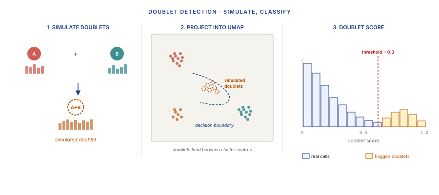
2.5 Mitochondrial fraction and ambient RNA
Two more QC filters that every pipeline runs:
Mitochondrial fraction. The percentage of reads mapping to mitochondrial genes (MT-*). Healthy cells have ~5–15% mitochondrial expression. A cell whose mitochondrial fraction is >25% is usually stressed, apoptotic, or had its plasma membrane compromised during dissociation — the cytoplasmic mRNAs leaked out, leaving mostly mitochondrial RNA (protected inside the mitochondrial membrane). Filtering at a per-dataset threshold (commonly 10–20%) removes these low-quality cells.
Ambient RNA. In a droplet, some of the mRNA you measure didn't come from your cell — it came from the solution around the cell, released by other lysed cells during dissociation. This ambient contamination is present in every cell to some degree, and shows up as "everyone expresses everything at low levels." Tools that correct for it:
- SoupX (Young & Behjati 2020) estimates the ambient-RNA profile from empty droplets and subtracts a fraction of it from each cell's count.
- CellBender (Fleming et al. 2023) uses a deep learning model (VAE-flavored) that jointly decomposes the observed counts into (cell signal + ambient background + technical noise).
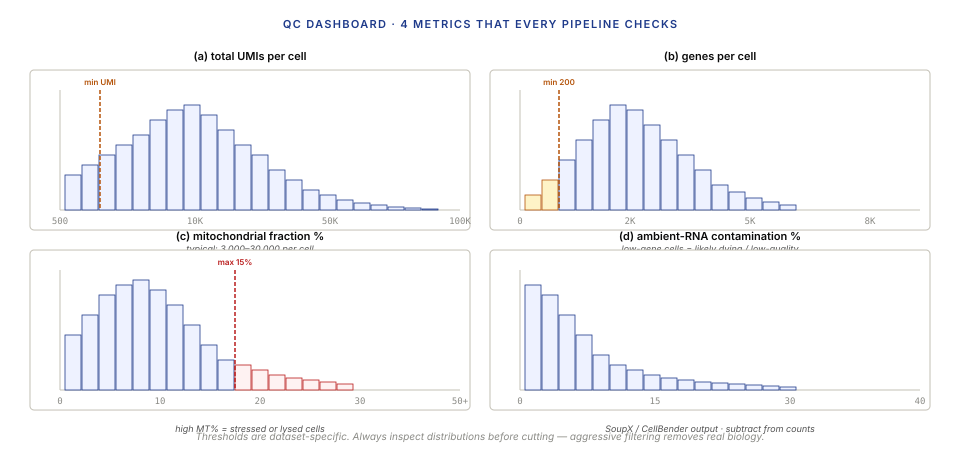
Part 3 · 25 min Normalisation and Feature Selection
3.1 Why bulk normalisation fails on sparse data
Lecture 5 §4.3 introduced DESeq2's median-of-ratios size factor. It works well for bulk data because (a) each sample has thousands of well-measured genes to compute a robust median over, and (b) library depths are high enough that per-gene counts are typically positive.
Single-cell data breaks both assumptions. A typical scRNA-seq cell has ~3,000 non-zero genes out of ~20,000 total — most genes are zero. The median-of-ratios estimator on mostly-zero vectors becomes unstable: the "median" is dominated by whichever genes happen to be non-zero in both samples, which is a biased subset.
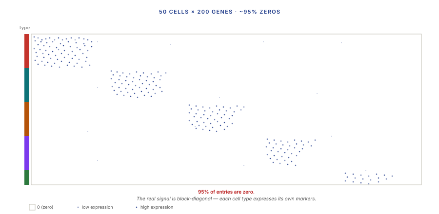
3.2 Log-normalisation and SCTransform
Two dominant approaches for single-cell normalisation:
Log-normalisation (Seurat's NormalizeData). Two steps:
- Divide each cell's counts by its total UMIs (per-cell size factor).
- Multiply by a scaling factor (typically 10,000), add 1, take natural log.
Result: log-CPM-equivalent values, with the pseudo-count of 1 preventing log(0). Fast, simple, works well for most downstream operations. The price: it ignores the mean-variance relationship of count data (variance scales with mean even after log).
SCTransform (Hafemeister & Satija 2019, Choudhary & Satija 2022). A more principled alternative. For each gene, fit a regularised negative-binomial generalised linear model predicting counts from total UMIs per cell. The Pearson residuals from this model are used as the normalised expression values.
This is statistically more rigorous than log-norm (handles the mean-variance relationship explicitly, stabilises variance across expression levels). The cost: slower, and the residuals are on a different scale than the raw counts — some downstream steps need adjustment.
In 2024, log-norm is still the default in Seurat and Scanpy workflows because it's fast and "good enough" for most analyses. SCTransform is used when variance-stabilisation matters (e.g., integrating datasets from different batches, §Lecture 8).
3.3 Highly variable gene selection
A typical scRNA-seq dataset has ~20,000 gene features per cell. Most of them are boring — expressed uniformly across all cell types, contributing no discrimination signal. Keeping all 20,000 wastes compute and, counterintuitively, hurts clustering (high-dimensional random walks drown out the real signal).
The fix: feature selection — keep only the top 2,000–5,000 highly variable genes (HVGs) for downstream analysis. Two common methods:
- Variance / mean-based (Seurat's
FindVariableFeaturesvst method): fit a mean-variance trend across all genes (similar to Lecture 6's dispersion trend); pick the genes with the highest residual variance (variance above what the trend predicts). - Pearson-residual-based (SCTransform): the genes with the largest variance in Pearson residuals across cells — essentially the same operation as above, but on the residual scale.
The top 2,000 HVGs capture most of the discriminating signal between cell types. The remaining 18,000 genes contribute noise to clustering and UMAP. Feature selection isn't optional — it's what makes the downstream steps work.
Part 4 · 50 min Dimensionality Reduction and Clustering
4.1 Why reduce dimensions
After HVG selection, each cell is a 2,000-dimensional point. Distance between cells in this space is meaningful (cells with similar expression are close) but we can't visualise 2,000D, and most clustering algorithms that work in 2D or 10D collapse in 2,000D — the curse of dimensionality.
Single-cell analysis tackles this with two successive reductions:
- PCA (principal component analysis) — linear, produces ~30–50 components capturing 50–80% of total variance.
- UMAP or t-SNE — nonlinear, produces a 2D visualisation from the PCA components.
Clustering happens on the PCA components, not on the 2D UMAP. UMAP is purely for visualisation.
4.2 PCA on the normalised matrix
PCA on a cells × genes matrix X (after normalisation, HVG selection, scaling to zero mean and unit variance per gene):
- Compute the covariance matrix C = XTX / (n−1) (or equivalently, compute SVD of X directly).
- Find the eigenvectors (principal components) of C — these are directions in gene space along which cells vary maximally.
- Project cells onto the top k components (k = 30–50 typically): cell i in the new representation is just X[i, :] · V:, 1:k.
The result is a cells × k matrix where k is 30–50 instead of 2,000. Each new dimension is a linear combination of the original genes, ordered by how much variance it captures.
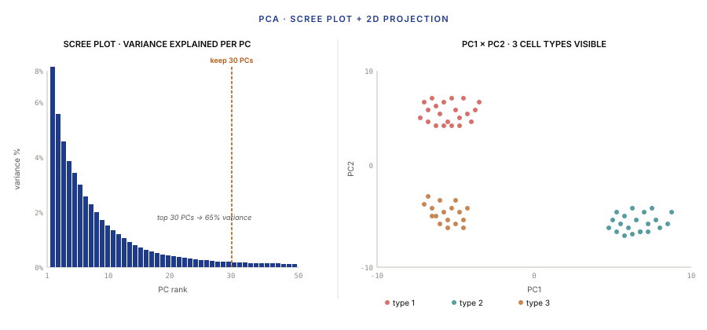
Practical choice: how many PCs to keep? The scree plot shows diminishing returns past some point. A common heuristic is "keep enough PCs to capture 50–80% of variance" — usually 30–50. More formally, parallel analysis compares your scree to one from permuted data and keeps only PCs above the permutation baseline.
4.3 UMAP and t-SNE for visualisation
Once you have cells in 30–50D PC space, you need a 2D visualisation so a biologist can see the clusters. Two tools dominate:
t-SNE (van der Maaten & Hinton 2008). Older. Optimises a 2D embedding such that pairwise distances in the low-dimensional space match pairwise distances in the high-dimensional space, where "distance" is measured via Gaussian kernels in high-D and t-distributions in low-D. Preserves local structure (near neighbours stay near) at the cost of distorting global structure (distances between distant clusters are meaningless in t-SNE).
UMAP (McInnes et al. 2018). Newer. Based on algebraic topology — treats the data as a fuzzy topological structure and finds a low-dimensional embedding that preserves that structure. In practice: faster than t-SNE, slightly better at preserving global structure (clusters sit at roughly-meaningful distances from each other), similar local-neighbourhood preservation. UMAP is the 2024 default.
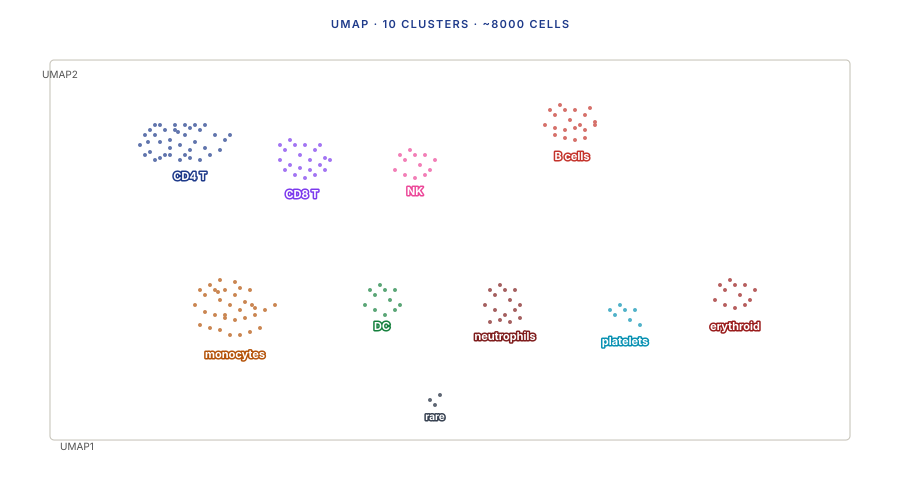
4.4 Graph-based clustering: Leiden and Louvain
Clustering 10,000 cells in 30D PC space is done graph-theoretically, not with k-means or hierarchical clustering (which would not respect manifold structure):
- Build a k-nearest-neighbours graph (kNN, k=10–30). Each cell is a node; edges connect each cell to its k nearest neighbours in PC space.
- Optional: build a shared-nearest-neighbours graph (SNN) — edge weight is the Jaccard overlap of k-NN neighbour sets. Denoises the raw kNN graph.
- Run Leiden or Louvain community detection — both maximise graph modularity (informally: find partitions where edges within clusters are dense and edges between clusters are sparse).
Leiden (Traag, Waltman, van Eck 2019) is strictly better than Louvain — it guarantees well-connected clusters, whereas Louvain can produce disconnected communities. Leiden is the 2024 default.
A critical hyperparameter: the resolution. Higher resolution → more clusters (finer subclustering). Lower resolution → fewer, larger clusters. This choice is not automatic; it depends on what biological question you're asking. Common practice: scan resolutions 0.1 to 2.0, pick the one where clusters align with known cell-type markers.
4.5 Marker gene identification
Once cells are clustered, the final analysis step is finding markers — genes that are differentially expressed in a given cluster compared to all other clusters. Markers are what let you assign cell-type identities (§5).
For each cluster c and each gene g, run a DE test comparing cells in c vs cells not in c. The output is a log-fold change + adjusted p-value per (cluster, gene). Sort by log-FC; the top genes are the cluster's markers.
Two DE test choices for this:
- Wilcoxon rank-sum test (Seurat default, Scanpy default). Nonparametric. Fast. Doesn't assume any count distribution. Robust to scRNA-seq's weird mean-variance relationship.
- MAST (Finak et al. 2015). A hurdle model — jointly models the fraction of cells expressing the gene and the expression level in expressing cells. Slower, sometimes more sensitive for low-count markers.
Wilcoxon is the default for speed. MAST is used when the markers really matter.
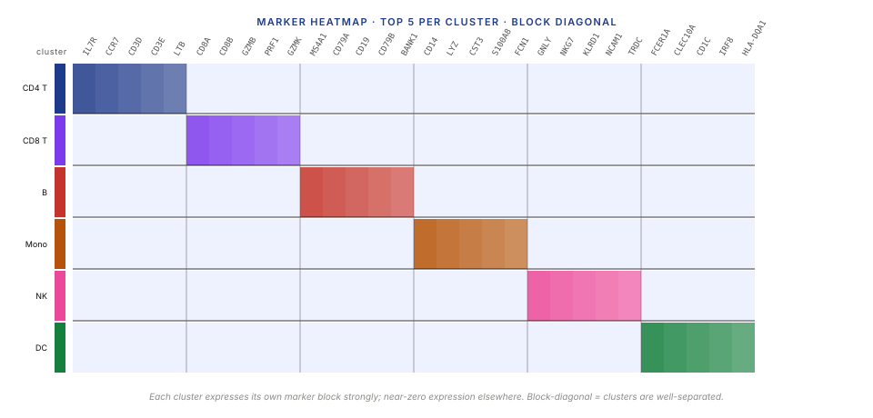
Part 5 · 20 min Cell-Type Annotation
5.1 Reference-based vs marker-based annotation
Once markers are identified, the final step is cell-type annotation — assigning a biological label to each cluster (T cell, hepatocyte, endothelial cell, etc.). Two paradigms:
Marker-based annotation (manual). For each cluster, look at its top markers and consult a reference of known cell-type markers:
- B cell markers: MS4A1 (CD20), CD79A, CD19.
- Cytotoxic T cell: CD8A, CD8B, GZMB, PRF1.
- Hepatocyte: ALB, AFP, APOA1, TF.
- Macrophage: CD68, CSF1R, MARCO.
Assign the cluster the label whose markers best match the cluster's top genes. Works well when cell types are well-characterised (immune cells, major organ cell types). Fails when analysing rare or novel populations without documented markers.
Reference-based annotation (automated). Given a pre-annotated reference atlas (e.g., Tabula Sapiens — human tissues, 500k cells, cell types annotated by experts), compute the most-similar reference cell for each query cell, transfer the reference's cell-type label:
- SingleR (Aran et al. 2019). Per-cell correlation to reference-cell-type average profiles. Fast, stable. The R ecosystem default.
- Azimuth (Stuart et al. 2022). Web application running a pre-trained reference for common tissues (PBMC, bone marrow, heart). Upload your data, get annotations in 20 minutes.
- scArches / scPoli (Lotfollahi et al. 2022). Deep-learning transfer of cell-type labels via latent-space mapping.
Reference-based methods are faster and less labour-intensive; they work well for well-studied tissues. They fail silently on novel cell types (no reference match means the query is labeled as the closest wrong type). Always validate reference-based annotations against markers.
5.2 Cell-type ontologies and atlases
For consistent reporting, cell-type annotations should reference a shared vocabulary:
- Cell Ontology (CL) (Bard et al. 2005, ongoing). The formal ontology of animal cell types. Every cell type has a unique CL identifier (e.g., CL:0000814 for "mature NK T cell"). Hierarchical — parent-child relationships between cell types and lineages.
- The Human Cell Atlas (HCA). An effort to map every cell type in the human body (HCA Consortium, 2017–). As of 2024, ~30 tissue-scale datasets published. HCA data is the reference for most modern annotation pipelines.
- Tabula Sapiens / Tabula Muris (Tabula Sapiens Consortium 2022). Single-institution pan-tissue atlases with consistent annotation. Smaller than HCA but more consistently annotated.
Use CL identifiers in your metadata wherever possible. Vocabulary consistency is what makes cross-study comparison work.
Wrap-up · 10 min Takeaways, homework, and next lecture
What you should take away
- Single-cell RNA-seq measures per-cell transcript abundance. Bulk averages hide cell-type composition; single-cell resolves it. The cost is per-cell signal-to-noise; the payoff is heterogeneity becomes visible.
- UMIs solve PCR duplicate counting via error-correcting tags. Each mRNA gets a unique serial number before the amplification channel; final counts are distinct UMIs, not reads. Essential at the amplification levels scRNA-seq uses.
- QC is non-optional: empty droplets, doublets, MT%, ambient RNA. Every pipeline applies all four. Filtering cuts 20–40% of observed "cells" before downstream analysis.
- Normalisation must respect sparsity. Bulk methods (median-of-ratios) fail on mostly-zero matrices. Log-normalisation or Pearson residuals, followed by HVG selection, is the 2024 default.
- Dimensionality reduction is two-stage: PCA → UMAP. PCA gives a linear 30–50D representation; UMAP embeds to 2D for visualisation. Clustering runs on PCs, not on UMAP coordinates.
- Leiden graph clustering is the 2024 default for cell grouping. Resolution is a free parameter; tune it to biology, not to a number.
- Annotation: marker-based or reference-based. Reference-based is fast and automated; marker-based is manual but catches reference gaps. Do both.
Next lecture
Advanced single-cell: pseudotime and trajectory inference, RNA velocity (a state-space estimator on spliced/unspliced ratios), batch integration (Harmony, scVI as variational EM), multi-modal single-cell (CITE-seq, multi-ome), spatial transcriptomics.
Homework
- Download the 10x PBMC 3k dataset (
pbmc_10k_v3from 10x public datasets). Run a standard Scanpy or Seurat pipeline end-to-end: QC, normalise, HVG, PCA, UMAP, Leiden. Report: cells after QC, number of clusters at resolution 1.0, approximate cell-type assignment for each cluster. - Make a knee plot of the PBMC dataset's raw
raw_feature_bc_matrix.h5. Mark the EmptyDrops threshold. How many barcodes are above the knee? How does that compare to the number of cells 10x reports as valid? - Run Scrublet on the same dataset. What's the estimated doublet rate? How does it compare to the 6-8% expected for the loading concentration?
- Compute the dispersion trend (as in Lecture 6 §3.3) but now on the per-gene variance across single cells. How does it compare to the bulk mean-dispersion trend? Is the empirical-Bayes shrinkage idea still useful here?
- Annotate the PBMC clusters two ways: (a) SingleR against a reference, (b) manually, using canonical markers. How many clusters do the two methods agree on? Where do they disagree, and which is right?
Recommended reading
- Macosko, E. Z., Basu, A., Satija, R., et al. (2015). Highly parallel genome-wide expression profiling of individual cells using nanoliter droplets. Cell 161, 1202–1214. (The Drop-seq paper.)
- Zheng, G. X. Y., Terry, J. M., Belgrader, P., et al. (2017). Massively parallel digital transcriptional profiling of single cells. Nature Communications 8, 14049. (The Chromium 10x paper.)
- Lun, A. T. L., Riesenfeld, S., Andrews, T., et al. (2019). EmptyDrops: distinguishing cells from empty droplets in droplet-based single-cell RNA sequencing data. Genome Biology 20, 63.
- Hafemeister, C., & Satija, R. (2019). Normalization and variance stabilization of single-cell RNA-seq data using regularized negative binomial regression. Genome Biology 20, 296.
- Traag, V. A., Waltman, L., & van Eck, N. J. (2019). From Louvain to Leiden: guaranteeing well-connected communities. Scientific Reports 9, 5233.
- McInnes, L., Healy, J., & Melville, J. (2018). UMAP: Uniform Manifold Approximation and Projection for dimension reduction. arXiv:1802.03426.
- Aran, D., Looney, A. P., Liu, L., et al. (2019). Reference-based analysis of lung single-cell sequencing reveals a transitional profibrotic macrophage. Nature Immunology 20, 163–172.
- The Tabula Sapiens Consortium (2022). The Tabula Sapiens: a multiple-organ, single-cell transcriptomic atlas of humans. Science 376, eabl4896.
- Scanpy tutorial: scanpy.readthedocs.io
- Seurat tutorial: satijalab.org/seurat
Appendix — timing summary
| Block | Time | Cumulative |
|---|---|---|
| Part 1 — Why Single-Cell + Droplet Chemistry | 45 min | 0:45 |
| Part 2 — Data Pipeline and QC | 60 min | 1:45 |
| Part 3 — Normalisation and Feature Selection | 25 min | 2:10 |
| Part 4 — Dimensionality Reduction and Clustering | 50 min | 3:00 |
| Part 5 — Cell-Type Annotation | 20 min | 3:20 |
| Wrap-up | 10 min | 3:30 |
Total: ~3h 30min of content.